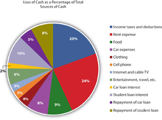
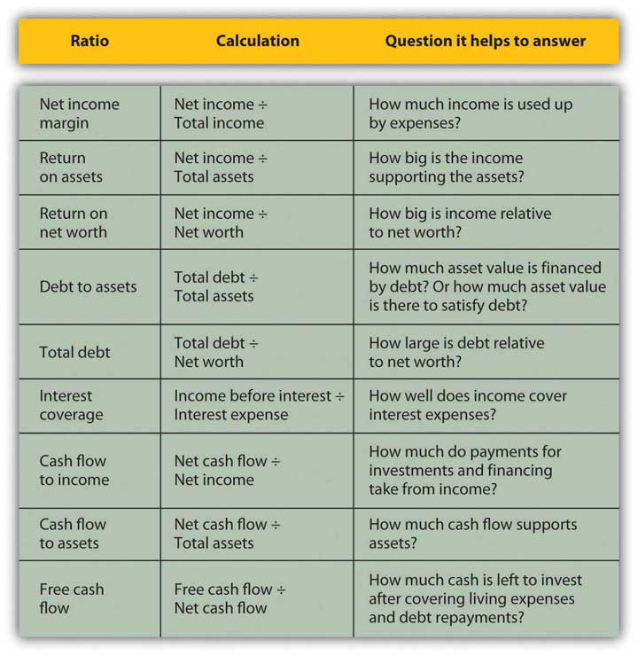

Financial statements are valuable summaries of financial activities because they can organize information and make it easier and clearer to see and therefore to understand. Each one—the income statement, cash flow statement, and balance sheet—conveys a different aspect of the financial picture; put together, the picture is pretty complete. The three provide a summary of earning and expenses, of cash flows, and of assets and debts.
Since the three statements offer three different kinds of information, sometimes it is useful to look at each in the context of the others, and to look at specific items in the larger context. This is the purpose of financial statement analysis: creating comparisons and contexts to gain a better understanding of the financial picture.
On common-size statementsFinancial statements where each item’s value is listed as a percentage of or in relation to another value., each item’s value is listed as a percentage of another. This compares items, showing their relative size and their relative significance (see Figure 3.11 "Common Common-Size Statements"). On the income statement, each income and expense may be listed as a percentage of the total income. This shows the contribution of each kind of income to the total, and thus the diversification of income. It shows the burden of each expense on total income or how much income is needed to support each expense.
On the cash flow statement, each cash flow can be listed as a percentage of total positive cash flows, again showing the relative significance and diversification of the sources of cash, and the relative size of the burden of each use of cash.
On the balance sheet, each item is listed as a percentage of total assets, showing the relative significance and diversification of assets, and highlighting the use of debt as financing for the assets.
Figure 3.11 Common Common-Size Statements

Alice can look at a common-size income statementAn income statement that lists each kind of revenue and each expense as a percentage of total revenues. by looking at her expenses as a percentage of her income and comparing the size of each expense to a common denominator: her income. This shows her how much of her income, proportionately, is used up for each expense (Figure 3.12 "Alice’s Common-Size Income Statement for the Year 2009").
Figure 3.12 Alice’s Common-Size Income Statement for the Year 2009

Seeing the common-size statement as a pie chart makes the relative size of the slices even clearer (Figure 3.13 "Pie Chart of Alice’s Common-Size Income Statement for the Year 2009").
Figure 3.13 Pie Chart of Alice’s Common-Size Income Statement for the Year 2009

The biggest discretionary use of Alice’s wages is her rent expense, followed by food, car expenses, and entertainment. Her income tax expense is a big use of her wages, but it is unavoidable or nondiscretionary. As Supreme Court Justice Oliver Wendell Holmes, Jr., said, “Taxes are what we pay for a civilized society.”U.S. Department of the Treasury, http://www.treas.gov/education/faq/taxes/taxes-society.shtml (accessed January 19, 2009). Ranking expenses by size offers interesting insight into lifestyle choices. It is also valuable in framing financial decisions, pointing out which expenses have the largest impact on income and thus on the resources for making financial decisions. If Alice wanted more discretionary income to make more or different choices, she can easily see that reducing rent expense would have the most impact on freeing up some of her wages for another use.
Looking at Alice’s negative cash flows as percentages of her positive cash flow (on the cash flow statement), or the uses of cash as percentages of the sources of cash, creates the common-size cash flowsA cash flow statement that lists each cash flow as a percentage of total positive cash flows.. As with the income statement, this gives Alice a clearer and more immediate view of the largest uses of her cash (Figure 3.14 "Alice’s Common-Size Cash Flow Statement for the Year 2009" and Figure 3.15 "Pie Chart of Alice’s Common-Size Cash Flow Statement").
Figure 3.14 Alice’s Common-Size Cash Flow Statement for the Year 2009

Figure 3.15 Pie Chart of Alice’s Common-Size Cash Flow Statement
Again, rent is the biggest discretionary use of cash for living expenses, but debts demand the most significant portion of cash flows. Repayments and interest together are 30 percent of Alice’s cash—as much as she pays for rent and food. Eliminating those debt payments would create substantial liquidity for Alice.
On the balance sheet, looking at each item as a percentage of total assets allows for measuring how much of the assets’ value is obligated to cover each debt, or how much of the assets’ value is claimed by each debt (Figure 3.16 "Alice’s Common-Size Balance Sheet, December 31, 2009").
Figure 3.16 Alice’s Common-Size Balance Sheet, December 31, 2009
This common-size balance sheetA balance sheet that lists each asset, liability, and equity as a percentage of total assets. allows “over-sized” items to be more obvious. For example, it is immediately obvious that Alice’s student loan dwarfs her assets’ value and creates her negative net worth.
Common-size statements allow you to look at the size of each item relative to a common denominator: total income on the income statement, total positive cash flow on the cash flow statement, or total assets on the balance sheet. The relative size of the items helps you spot anything that seems disproportionately large or small. The common-size analysis is also useful for comparing the diversification of items on the financial statement—the diversification of incomes on the income statement, cash flows on the cash flow statement, and assets and liabilities on the balance sheet. Diversification reduces risk, so you want to diversify the sources of income and assets you can use to create value (Figure 3.17 "Pie Chart of Alice’s Common-Size Balance Sheet: The Assets").
Figure 3.17 Pie Chart of Alice’s Common-Size Balance Sheet: The Assets

For example, Alice has only two assets, and one—her car—provides 95 percent of her assets’ value. If something happened to her car, her assets would lose 95 percent of their value. Her asset value would be less exposed to risk if she had asset value from other assets to diversify the value invested in her car.
Likewise, both her income and her positive cash flows come from only one source, her paycheck. Because her positive net earnings and positive net cash flows depend on this one source, she is exposed to risk, which she could decrease by diversifying her sources of income. She could diversify by adding earned income—taking on a second job, for example—or by creating investment income. In order to create investment income, however, she needs to have a surplus of liquidity, or cash, to invest. Alice has run head first into Adam Smith’s “great difficulty”Adam Smith, The Wealth of Nations (New York: The Modern Library, 2000), Book I, Chapter ix. (that it takes some money to make money; see Chapter 2 "Basic Ideas of Finance").
Common-size statements put the details of the financial statements in clear relief relative to a common factor for each statement, but each financial statement is also related to the others. Each is a piece of a larger picture, and as important as it is to see each piece, it is also important to see that larger picture. To make sound financial decisions, you need to be able to foresee the consequences of a decision, to understand how a decision may affect the different aspects of the bigger picture.
For example, what happens in the income statement and cash flow statements is reflected on the balance sheet because the earnings and expenses and the other cash flows affect the asset values, and the values of debts, and thus the net worth. Cash may be used to purchase assets, so a negative cash flow may increase assets. Cash may be used to pay off debt, so a negative cash flow may decrease liabilities. Cash may be received when an asset is sold, so a decrease to assets may create positive cash flow. Cash may be received when money is borrowed, so an increase in liabilities may create a positive cash flow.
There are many other possible scenarios and transactions, but you can begin to see that the balance sheet at the end of a period is changed from what it was at the beginning of the period by what happens during the period, and what happens during the period is shown on the income statement and the cash flow statement. So, as shown in the figure, the income statement and cash flow information, related to each other, also relate the balance sheet at the end of the period to the balance sheet at the beginning of the period (Figure 3.18 "Relationships Among Financial Statements").
Figure 3.18 Relationships Among Financial Statements
The significance of these relationships becomes even more important when evaluating alternatives for financial decisions. When you understand how the statements are related, you can use that understanding to project the effects of your choices on different aspects of your financial reality and see the consequences of your decisions.
Creating ratios is another way to see the numbers in relation to each other. Any ratio shows the relative size of the two items compared, just as a fraction compares the numerator to the denominator or a percentage compares a part to the whole. The percentages on the common-size statements are ratios, although they only compare items within a financial statement. Ratio analysis is used to make comparisons across statements. For example, you can see how much debt you have just by looking at your total liabilities, but how can you tell if you can afford the debt you have? That depends on the income you have to meet your interest and repayment obligations, or the assets you could use (sell) to meet those obligations. Ratio analysisA way of comparing amounts by creating ratios or fractions that compare the amount in the numerator to the amount in the denominator. can give you the answer.
The financial ratiosRatios used to understand financial statement amounts relative to each other. you use depend on the perspective you need or the question(s) you need answered. Some of the more common ratios (and questions) are presented in the following chart (Figure 3.19 "Common Personal Financial Ratios").
Figure 3.19 Common Personal Financial Ratios
These ratios all get “better” or show improvement as they get bigger, with two exceptions: debt to assets and total debt. Those two ratios measure levels of debt, and the smaller the ratio, the less the debt. Ideally, the two debt ratios would be less than one. If your debt-to-assets ratio is greater than one, then debt is greater than assets, and you are bankrupt. If the total debt ratio is greater than one, then debt is greater than net worth, and you “own” less of your assets’ value than your creditors do.
Some ratios will naturally be less than one, but the bigger they are, the better. For example, net income margin will always be less than one because net income will always be less than total income (net income = total income − expenses). The larger that ratio is and the fewer expenses that are taken away from the total income, the better.
Some ratios should be greater than one, and the bigger they are, the better. For example, the interest coverage ratio should be greater than one, because you should have more income to cover interest expenses than you have interest expenses, and the more you have, the better. Figure 3.20 "Results of Ratio Analysis" suggests what to look for in the results of your ratio analyses.
Figure 3.20 Results of Ratio Analysis

While you may have a pretty good “feel” for your situation just by paying the bills and living your life, it so often helps to have the numbers in front of you. Here is Alice’s ratio analysis for 2009 (Figure 3.21 "Alice’s Ratio Analysis, 2009").
Figure 3.21 Alice’s Ratio Analysis, 2009

The ratios that involve net worth—return-on-net-worth and total debt—are negative for Alice, because she has negative net worth, as her debts are larger than her assets. She can see how much larger her debt is than her assets by looking at her debt-to-assets ratio. Although she has a lot of debt (relative to assets and to net worth), she can earn enough income to cover its cost or interest expense, as shown by the interest coverage ratio.
Alice is earning well. Her income is larger than her assets. She is able to live efficiently. Her net income is a healthy 13.53 percent of her total income (net income margin), which means that her expenses are only 86.47 percent of it, but her cash flows are much less (cash flow to income), meaning that a significant portion of earnings is used up in making investments or, in Alice’s case, debt repayments. In fact, her debt repayments don’t leave her with much free cash flow; that is, cash flow not used up on living expenses or debts.
Looking at the ratios, it is even more apparent how much—and how subtle—a burden Alice’s debt is. In addition to giving her negative net worth, it keeps her from increasing her assets and creating positive net worth—and potentially more income—by obligating her to use up her cash flows. Debt repayment keeps her from being able to invest.
Currently, Alice can afford the interest and the repayments. Her debt does not keep her from living her life, but it does limit her choices, which in turn restricts her decisions and future possibilities.
Another useful way to compare financial statements is to look at how the situation has changed over time. Comparisons over time provide insights into the effects of past financial decisions and changes in circumstance. That insight can guide you in making future financial decisions, particularly in foreseeing the potential costs or benefits of a choice. Looking backward can be very helpful in looking forward.
Fast-forward ten years: Alice is now in her early thirties. Her career has progressed, and her income has grown. She has paid off her student loan and has begun to save for retirement and perhaps a down payment on a house.
A comparison of Alice’s financial statements shows the change over the decade, both in absolute dollar amounts and as a percentage (see Figure 3.22 "Alice’s Income Statements: Comparison Over Time", Figure 3.23 "Alice’s Cash Flow Statements: Comparison Over Time", and Figure 3.24 "Alice’s Balance Sheets: Comparison Over Time"). For the sake of simplicity, this example assumes that neither inflation nor deflation have significantly affected currency values during this period.
Figure 3.22 Alice’s Income Statements: Comparison Over Time

Figure 3.23 Alice’s Cash Flow Statements: Comparison Over Time

Figure 3.24 Alice’s Balance Sheets: Comparison Over Time
Starting with the income statement, Alice’s income has increased. Her income tax withholding and deductions have also increased, but she still has higher disposable income (take-home pay). Many of her living expenses have remained consistent; rent and entertainment have increased. Interest expense on her car loan has increased, but since she has paid off her student loan, that interest expense has been eliminated, so her total interest expense has decreased. Overall, her net income, or personal profit, what she clears after covering her living expenses, has almost doubled.
Her cash flows have also improved. Operating cash flows, like net income, have almost doubled—due primarily to eliminating the student loan interest payment. The improved cash flow allowed her to make a down payment on a new car, invest in her 401(k), make the payments on her car loan, and still increase her net cash flow by a factor of ten.
Alice’s balance sheet is most telling about the changes in her life, especially her now positive net worth. She has more assets. She has begun saving for retirement and has more liquidity, distributed in her checking, savings, and money market accounts. Since she has less debt, having paid off her student loan, she now has positive net worth.
Comparing the relative results of the common-size statements provides an even deeper view of the relative changes in Alice’s situation (Figure 3.25 "Comparing Alice’s Common-Size Statements for 2009 and 2019: Income Statements", Figure 3.26 "Comparing Alice’s Common-Size Statements for 2009 and 2019: Cash Flow Statements", and Figure 3.27 "Comparing Alice’s Common-Size Statements for 2009 and 2019: Balance Sheets").
Figure 3.25 Comparing Alice’s Common-Size Statements for 2009 and 2019: Income Statements
Figure 3.26 Comparing Alice’s Common-Size Statements for 2009 and 2019: Cash Flow Statements

Figure 3.27 Comparing Alice’s Common-Size Statements for 2009 and 2019: Balance Sheets

Although income taxes and rent have increased as a percentage of income, living expenses have declined, showing real progress for Alice in raising her standard of living: it now costs her less of her income to sustain herself. Interest expense has decreased substantially as a portion of income, resulting in a net income or personal profit that is not only larger, but is larger relative to income. More of her income is profit, left for other discretionary uses.
The change in operating cash flows confirms this. Although her investing activities now represent a significant use of cash, her need to use cash in financing activities—debt repayment—is so much less that her net cash flow has increased substantially. The cash that used to have to go toward supporting debt obligations now goes toward building an asset base, some of which (the 401(k)) may provide income in the future.
Changes in the balance sheet show a much more diversified and therefore much less risky asset base. Although almost half of Alice’s assets are restricted for a specific purpose, such as her 401(k) and Individual Retirement Account (IRA) accounts, she still has significantly more liquidity and more liquid assets. Debt has fallen from ten times the assets’ value to one-tenth of it, creating some ownership for Alice.
Finally, Alice can compare her ratios over time (Figure 3.28 "Ratio Analysis Comparison").
Figure 3.28 Ratio Analysis Comparison
Most immediately, her net worth is now positive, and so are the return-on-net-worth and the total debt ratios. As her debt has become less significant, her ability to afford it has improved (to pay for its interest and repayment). Both her interest coverage and free cash flow ratios show large increases. Since her net income margin (and income) has grown, the only reason her return-on-asset ratio has decreased is because her assets have grown even faster than her income.
By analyzing over time, you can spot trends that may be happening too slowly or too subtly for you to notice in daily living, but which may become significant over time. You would want to keep a closer eye on your finances than Alice does, however, and review your situation at least every year.